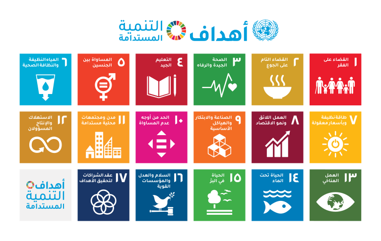

مساهمتنا في أهداف التنمية المستدامة
عين الكفيف الذكية يساهم في تحقيق العديد من أهداف التنمية المستدامة، حيث يسعى لتحسين حياة المكفوفين عبر التكنولوجيا والابتكار.
- الهدف 3 - الصحة الجيدة والرفاه: تحسين التنقل والاستقلالية للمكفوفين.
- الهدف 5 - المساواة بين الجنسين: المساواة بين الجنسين تعني ضمان حصول النساء والرجال على فرص متكافئة في جميع مجالات الحياة، بما في ذلك التعليم، العمل، والرعاية الصحية.
- الهدف 9 - الصناعة و الأبتكار والهياكل الأساسية:الصناعة والابتكار والهياكل الأساسية تعني تطوير بنية تحتية قوية ومستدامة، وتعزيز الابتكار ودعم التصنيع الشامل، بما يضمن تحسين جودة الحياة، وخلق فرص عمل، ودفع عجلة التنمية الاقتصادية.
